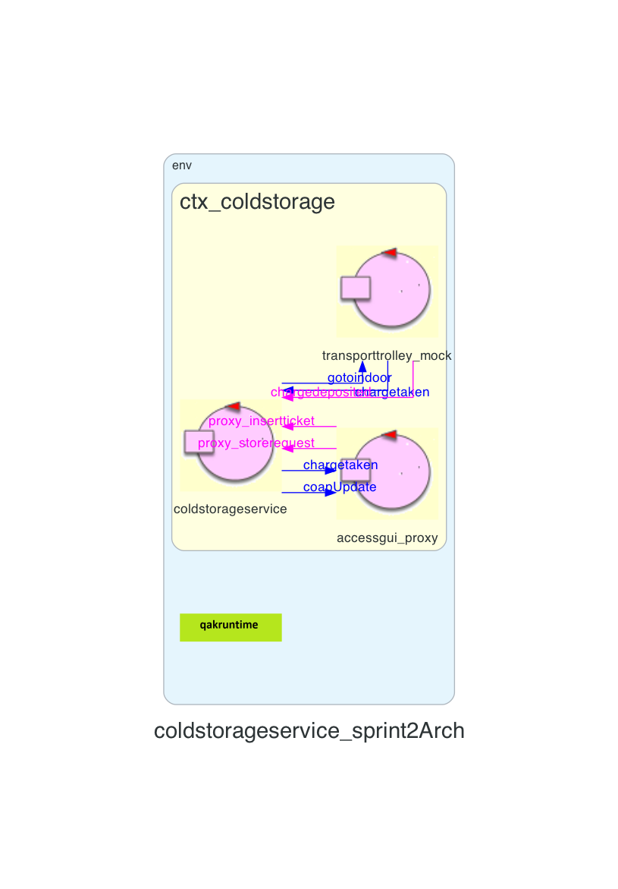

Introduction
Lo Sprint3 è il naturale proseguo di quanto realizzato nello Sprint2.Requirements
Descrizione del
TemaFinale23
Goals Sprint 3
- Identificare ed analizzare tutti i problemi relativi ai requisiti che coinvolgono la alarm device e il warning device
- Integrare al sistema realizzato nello Sprint2 la alarm device e il warning device, che esprimono gli Alarm Requirements
- Sviluppare il software ed eseguirlo su una scheda Raspberry Pi
- Testare il sistema
Requirement analysis
Chiarimenti del committente
L'interazione con il committente ha permesso di chiarire alcuni aspetti del progetto:Chiarimenti con il committente
Sistema
Il macro-componente identificato che si va ad aggiungere al prodotto degli sprint precedenti è warning ed alarm devices:
- un Led
- un Sonar
- una scheda Raspberry Pi che identificherà il nodo computazionale dei due devices
- cavetti jumper femmina-femmina per permettere i collegamenti tra il Sonar,Led e Raspberry Pi
Analisi
Dai requisiti espressi nel Tema Finale e dalle analisi già effettuate negli Sprint0, Sprint1 e Sprint2, in questo Sprint occorre analizzare le entità:- alarm device, che si occupa di notificare quando una soglia DLIMT viene violata, al fine di fermare il Transport Trolley
- warning device, che si occupa di mostrare lo stato del Transport Trolley tramite un Led
Inoltre questi rappresentano gli Alarm Requirements ceh dovranno essere sempre soddisfatti per fare in modo che il Transport trolley si comporti in linea con i requisiti forniti dal committente.
alarm device
L'alarm device è un componenete costituito da un Sonar che è in grado di misurare la distanza tra esso ed un ostacolo presente di fronte al medesimo. Quando il Sonar rileva una distanza minore di una soglia DLIMT il Transport Trolley deve essere fermato, fino a che non viene rilevata una distanza maggiore sempre di DLIMT.Nota importante è che il Transport Trolley non può essere fermato due volte consecutive entro un lasso di tempo pari a MINT millisecondi, bensì dovrebbe intercorrere un tempo MINT millisecondi tra uno stop e quello successivo.
warning device
Il warning device è un componenete costituito da un Led che comunica lo stato del Transport trolley. Il Led può rappresentare 3 stati diversi:- Transport Trolley in HOME: il Led è spento
- Transport Trolley in movimento: il Led lampeggia con un intervallo costante
- Transport Trolley è fermo: il Led è acceso
Analisi del Problema
Innanzitutto gli Alarm Requirements devono essere sempre soddisfatti:Gli Alarm Requirements devono essere sempre soddisfatti per permettere il corretto funzionamento del Transport trolley
I componenti warning device e alarm device devono essere in esecuzione all'interno di un Raspberry Pi
Il Transport Trolley deve fermarsi quando il Sonar rileva una misura minore di una soglia DLIMT
Una volta che la soglia misurata dal sonar viene superata per
eccesso, dopo che il Transport Trolley è stato fermato per via della soglia violata, il Transport Trolley tornerà a svolgere il compito su
cui stava lavorando quando è stato fermato
- Arriva uno stop dopo MINT millisecondi ed in quel momento il Transport trolley è in movimento
- Arriva uno stop dopo MINT millisecondi ed in quel momento il Transport trolley è ancora fermo dallo stop precedente
- Arriva uno stop prima MINT millisecondi ed in quel momento il Transport trolley è in movimento
- Arriva uno stop prima MINT millisecondi ed in quel momento il Transport trolley è ancora fermo dallo stop precedente
Gli scnenari 3 e 4 presentano uno stop prima del tempo conscesso. Andrebbe valutato come si vuole agire:
- se ignorare le richieste che arrivano prima del dovuto
- se prendere in considerazione una coda di eventi che sono arrivati ma non ancora considerabili perché gli Alarm Requirements non lo permettono
Interazioni
| Messaggio | Mittente | Destinatario | Semantica messaggio | Descrizione |
|---|---|---|---|---|
| storerequest | ServiceAccessGUI | ColdStorageService | Request | Semantica Request perchè il conducente deve sapere immediatamente se il suo ticket è stato accettato o meno. Contiene la quantità del peso FW che si vuole scaricare. |
| replystorerequest | ColdStorageService | ServiceAccessGUI | Reply | Semantica Reply |
| insertticket | ServiceAccessGUI | ColdStorageService | Request | |
| replyinsertticket | ColdStorageService | ServiceAccessGUI | Reply | |
| chargetaken | ColdStorageService | ServiceAccessGUI | Dispatch | |
| coldroomdata | ColdStorageService | ServiceAccessGUI | Dispatch |
Architettura logica
Codice QAK per la modellazione del sistema: ColdStorageService.qak
Il sistema da noi modellato, presenta la seguente architettura logica:

Test plans
| Test | Entità coinvolte | Scenario | Comportamento atteso |
|---|---|---|---|
Project
Conclusioni
Gli output dello sprint2 sono:
- ServiceAccessGUI
- Versione aggiornata ColdStorageService
- MockTransportTrolley
Goals Sprint 3
Si possono definire in seguito i goal relativi allo Sprint3:- Testare il sistema
By
Tassinari Gabriele, email: gabriele.tassinari2@studio.unibo.it
Baraldi Leonardo, email: leonardo.baraldi@studio.unibo.it
Koss Krystian, email: krystian.koss@studio.unibo.it
GIT repo: https://github.com/4utotune/ColdStorageService/
Tassinari Gabriele, email: gabriele.tassinari2@studio.unibo.it
Baraldi Leonardo, email: leonardo.baraldi@studio.unibo.it
Koss Krystian, email: krystian.koss@studio.unibo.it
GIT repo: https://github.com/4utotune/ColdStorageService/